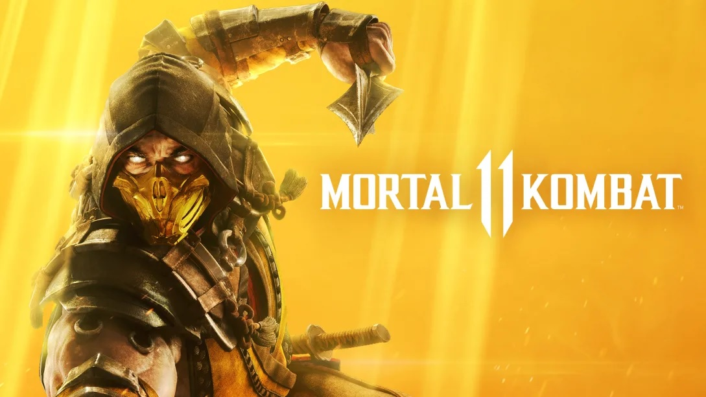

Mario Kart™ 8 Deluxe

¡Calienta motores en la versión definitiva de Mario Kart™ 8 y juega donde y cuando quieras!
Compite con tus amigos en carreras o en el modo batalla, que incluye circuitos nuevos y otros ya conocidos. Juega en el modo local y en 1080p en partidas de hasta 4 jugadores en el modo televisor. Todos los circuitos de la versión de Wii U, incluyendo el contenido descargable, están disponibles.
Además, ¡los inklings aparecen como personajes invitados junto con otro personajes de juegos anteriores, como el Rey Bú, Huesitos y Bowser Jr!

Mortal Kombat 11, la más reciente entrega de la aclamada franquicia, te ofrece una experiencia más profunda y personalizada que nunca.
Con las nuevas variantes de personaje tendrás un control sin precedentes para personalizar a tus luchadores y hacerlos únicos. Con un reparto de luchadores nuevos y klásicos, el modo Historia cinemático continúa la épica saga iniciada hace más de 25 años. Juega con una variedad de personajes, pasados, presentes y futuros, en una nueva narrativa donde el tiempo se distorsiona y Raiden debe enfrentarse a Kronika, la Guardiana del Tiempo.
Este nuevo título ofrece múltiples modos de juego, incluyendo las Torres del Tiempo, los que permiten a los jugadores poner a prueba sus habilidades a través de varios desafíos y disfrutar de Mortal Kombat 11 de muchas otras maneras.